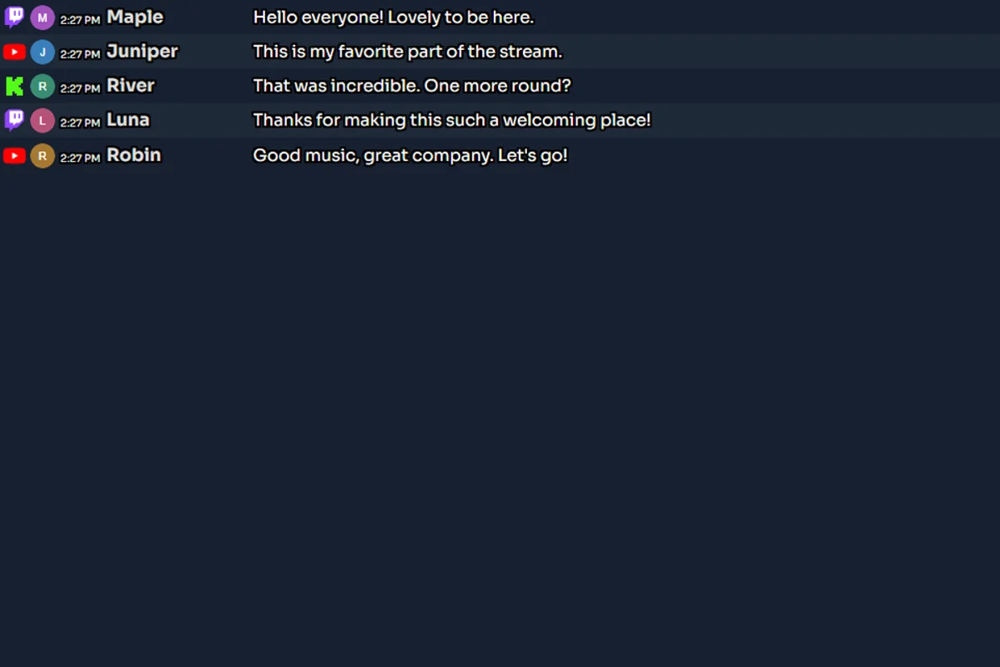
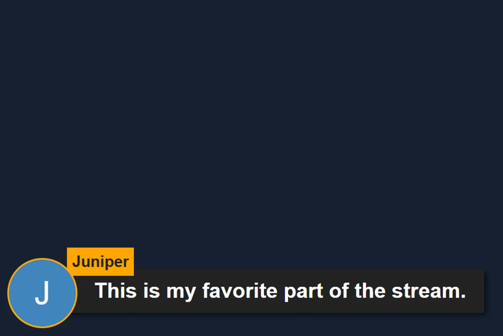
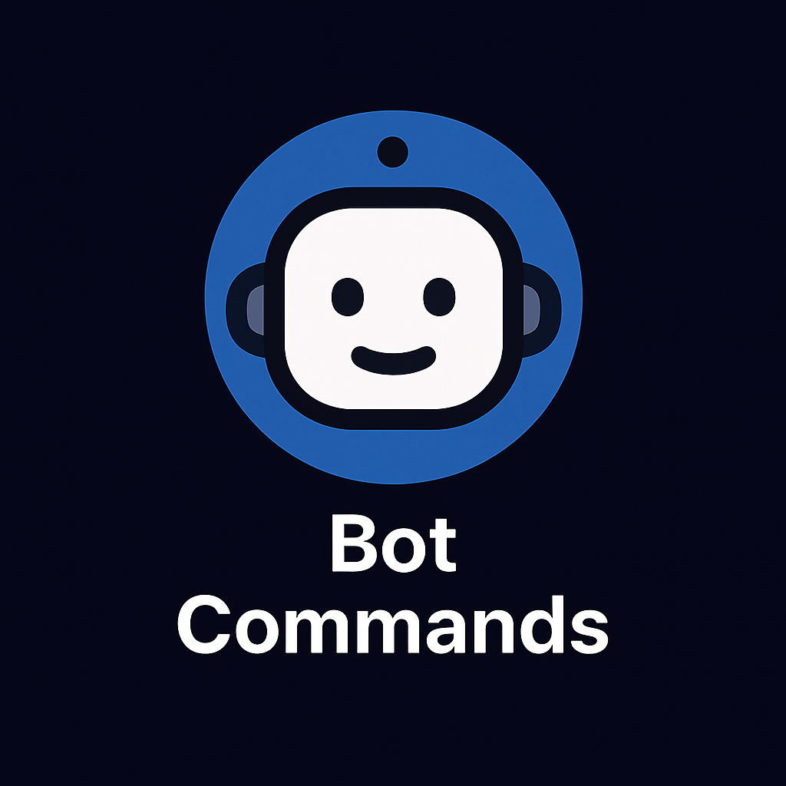
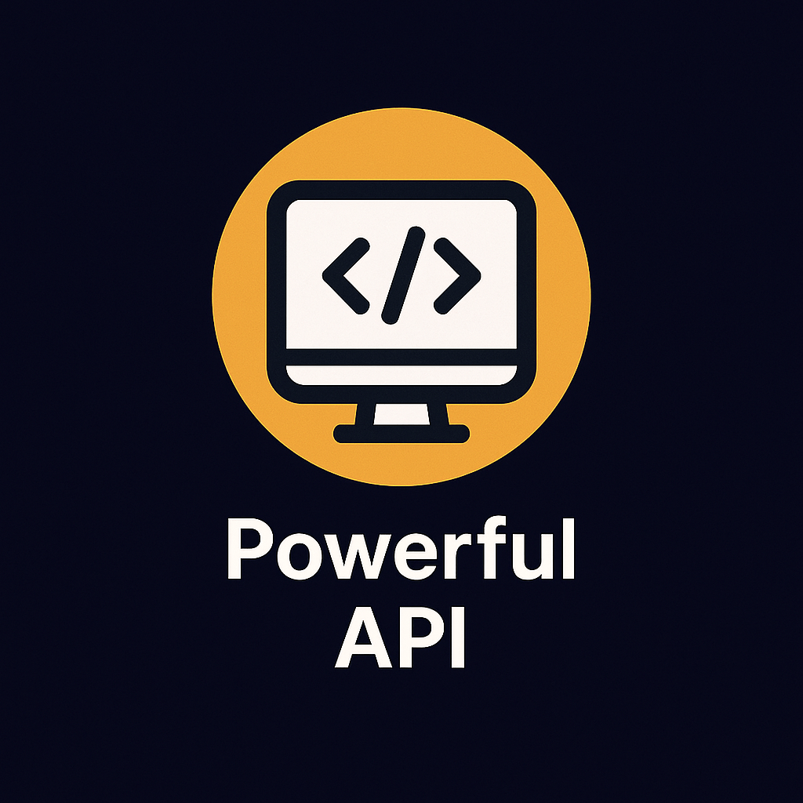
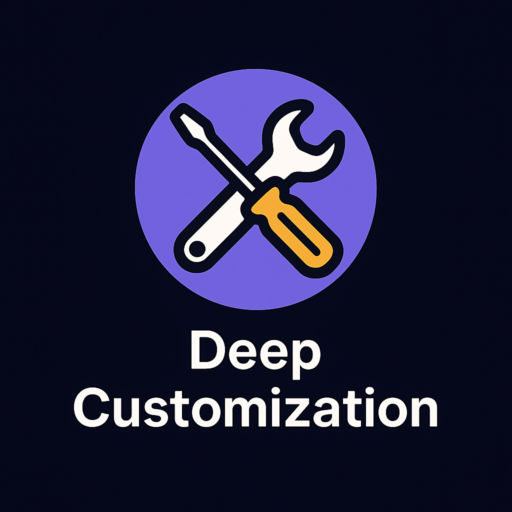
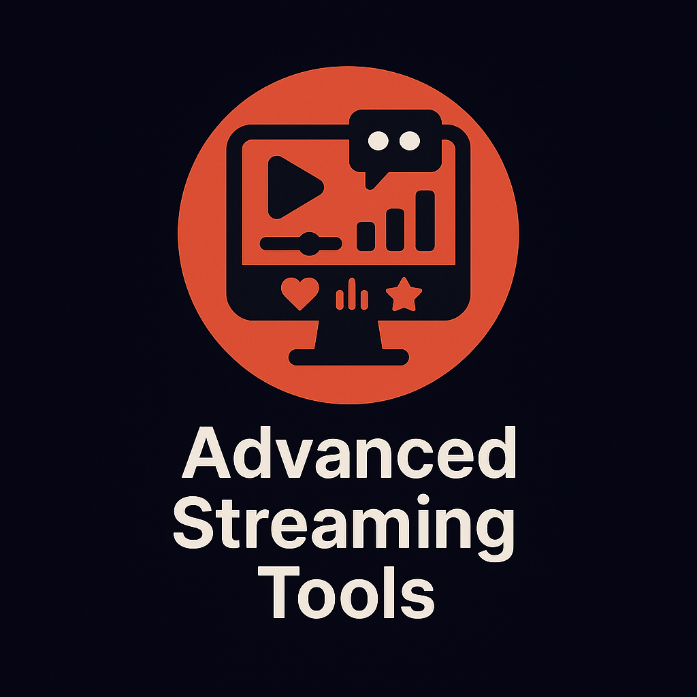

Bring your chats together, put your audience on screen, and make each stream your own.

Connect with viewers across all your streaming platforms simultaneously. Social Stream Ninja consolidates chat messages from dozens of platforms into a single, easy-to-manage dashboard.

Highlight the best messages from your audience directly on your stream with beautiful, customizable overlays.

Create automated interactions with your audience through custom commands and responses.
Choose a voice cohost, chat bot, browser companion, or focused AI processing tools—without locking the rest of your stream into one provider.
Bring chat messages to life with text-to-speech capabilities, making your stream more engaging and accessible.
Extend Social Stream Ninja's capabilities with robust API integration options.

Make Social Stream Ninja truly yours with extensive customization options for both functionality and appearance.

Take your streams to the next level with our suite of professional tools designed for engagement and interaction.

Social Stream Ninja works with 100+ platforms and services - here's a sample
Don't see your platform? Join our Discord to request a new integration or learn how to add it yourself.
| Feature | Social Stream Ninja | Competitors |
|---|---|---|
| Cost | Free & Open Source | $10-50/month subscription |
| Platform Support | 100+ platforms | 1-5 platforms |
| API Keys Required | None for most platforms | Required for most platforms |
| Customization | Unlimited with CSS/JS | Limited templates |
| Two-way Chat | Yes, on most platforms | Limited or extra cost |
| AI Integration | Local models, voice cohost, cloud providers, and custom APIs | Limited or nonexistent |
| Community Support | Active Discord community | Varies by provider |
| Extensions | Open for contributions | Closed ecosystem |
| Interactive Games | Built-in mini-games | Not available |
| AI Co-Host | Multimodal AI assistant | Not available |
Start using Social Stream Ninja today and take your audience engagement to the next level.